1048A14 air cleaner filtering element - replace.
- Path
- Procedures > 10 ENGINE > 1048 ENGINE AIR SUPPLY CIRCUIT > 1048A vacuum air circuit > 1048A14 air cleaner filtering element - replace.
- Kind
- repair procedure (removal / refitting; the operation number is the code)
- Applies to
- engines: 1.6 TS , 1.8 TS, 2.0 JTS, 2.5 V6, 3.2 V6, 1.9 JTD 8v , 1.9 JTD 16v, 2.0 JTS, 2.4 JTD 10v, 2.4 JTD 20v; all production periods
- Interactive page
- https://sloeber94.github.io/elrnDB-a156/en/#/3237526
Applies to: engines: 2.5 V6, 3.2 V6; all production periods
 Removing
Removing
 Refitting
Refitting1. Disconnect the air supply pipe to the chamber from the air flow meter.
2. Disconnect the electrical connection from the air flow meter.
 | Name | Connector |
|---|---|---|
2 | Air flow meter |
3. Undo the bolts (3a) and remove the air filter cover (3b) complete with air flow meter (3c).
4. Remove the air filter filter element.
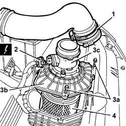
Applies to: engines: 2.5 V6, 3.2 V6; all production periods
Refitting
RemovingFit a new element in the air filter.
Fit the air filter cover complete with air flow meter and fix it tightening the bolts to the recommended torque.
Connect the electrical connection to the air flow meter.
Connect the air supply hose to the chamber to the air flow meter.
Applies to: engines: 1.6 TS , 1.8 TS; all production periods
Removing
Refitting1. Loosen the fixing bands (1a), remove the duct (1b) from the air filter.
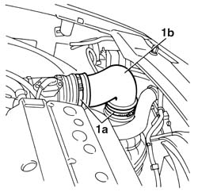
Applies to: engines: 1.6 TS , 1.8 TS; all production periods
1. Undo the fixing bolts (1a), remove the cover (1b) from the air filter.
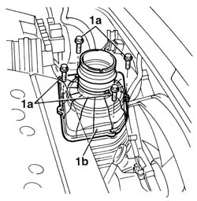
Applies to: engines: 1.6 TS , 1.8 TS; all production periods
1. Take out the filter element.
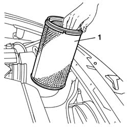
Applies to: engines: 1.6 TS , 1.8 TS; all production periods
Refitting
RemovingPosition the new filter element in its seating.
Refit the air filter cover with its bolts.
Refit the air filter duct with the fixing bands.
Applies to: engines: 2.0 JTS, 2.0 JTS; all production periods
Removing
RefittingEnsure that the ignition key is in OFF position, then disconnect the negative battery terminal.
| Name | Connector |
|---|---|---|
- | Battery |
Proceed with removal 1048A59 PIPE from flow meter to throttle casing hose - R.R. .
1. Remove the relay protective cover.
2. Release the relays from the battery drip tray and move them to the side.
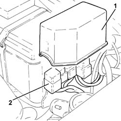
Applies to: engines: 2.0 JTS, 2.0 JTS; all production periods
1. Disconnect the electrical connection from the air flow meter.
| Name | Connector |
|---|---|---|
1 | Air flow meter |
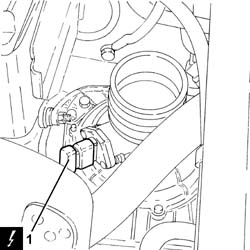
Applies to: engines: 2.0 JTS, 2.0 JTS; all production periods
1. Undo the bolts (1a) and remove the air filter cover (1b) complete with air flow meter (1c) and hose (1d).
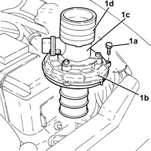
Applies to: engines: 2.0 JTS, 2.0 JTS; all production periods
1. Remove the air filter filter element.
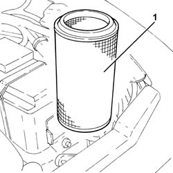
Applies to: engines: 2.0 JTS, 2.0 JTS; all production periods
Refitting
RemovingPlace the air filter filter element back in its housing.
Place the air filter cover, complete with air flow meter and hose, back in its housing and secure it using the bolts.
Connect the electrical connection to the air flow meter.
Fasten the relays to the battery drip tray.
Place the relay protective cover back in its housing.
Proceed with refitting 1048A59 PIPE from flow meter to throttle casing hose - R.R. .
Connect the negative (-) battery terminal.
Applies to: engines: 1.9 JTD 8v , 2.4 JTD 10v; all production periods
Removing
Refitting1048A50 air inlet pipe to turbo charger - r + r
1. Undo the bolts (1a) and remove the air filter cover (1b) and the duct (1c).
2. Remove the element from the air filter.
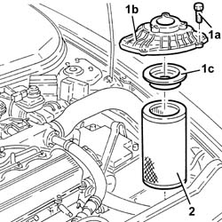
Applies to: engines: 1.9 JTD 8v , 2.4 JTD 10v; all production periods
Refitting
RemovingFit a new element in the air filter.
Fit the duct, the air filter cover and fix it using the bolts.
Applies to: engines: 1.9 JTD 16v; all production periods
Removing
RefittingProceed with removal 1016A10 sound-proofing cover - r + r .
Ensure that the ignition key is in OFF position, then disconnect the battery negative terminal (-).
| Name | Connector |
|---|---|---|
- | Battery |
Proceed with removal 1048A50 air inlet pipe to turbo charger - r + r .
1. Disconnect the electrical connection from the air flow meter.
| Name | Connector |
|---|---|---|
1 | Air flow meter |
2. Undo the bolts (2a) and remove the air filter cover (2b) complete with air flow meter (2c) and sleeve (2d).
3. Remove the duct.
4. Remove the air filter filter element.
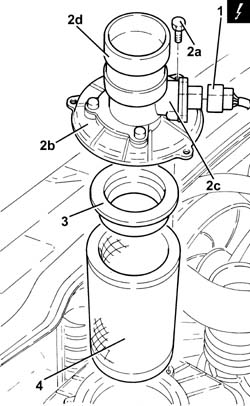
Applies to: engines: 1.9 JTD 16v; all production periods
Refitting
Removing.
Place the air filter filter element back in its housing.
Refit the duct.
Place the air filter cover, complete with air flow meter and corrugated sleeve and secure it using the bolts.
Connect the electrical connection to the air flow meter.
Proceed with refitting 1048A50 air inlet pipe to turbo charger - r + r .
Connect the negative (-) battery terminal.
Proceed with refitting 1016A10 sound-proofing cover - r + r .
Applies to: engines: 2.4 JTD 20v; all production periods
Removing
RefittingProceed with removal 1048A50 air inlet pipe to turbo charger - r + r .
Proceed with removal 1016A10 sound-proofing cover - r + r .
Proceed with removal 5530B10 battery - r+r .
1. Disconnect the electrical connection from the air flow meter.
| Name | Connector |
|---|---|---|
1 | Air flow meter |
2. Undo the bolts (2a) and remove the air filter cover (2b) complete with air flow meter (2c).
3. Remove the duct.
4. Remove the air filter filter element.
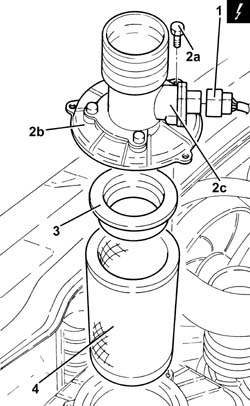
Applies to: engines: 2.4 JTD 20v; all production periods
Refitting
Removing.
Place a new filter element for the air filter back in the housing.
Refit the duct.
Place the air filter cover, complete with air flow meter and secure it using the bolts.
Connect the electrical connection to the air flow meter.
Proceed with refitting 5530B10 battery - r+r .
Proceed with refitting 1016A10 sound-proofing cover - r + r .
Proceed with refitting 1048A50 air inlet pipe to turbo charger - r + r .
Topics linked from this page (7)
- 1016A10 sound-proofing cover - r + r
- 1048A50 air inlet pipe to turbo charger - r + r
- 1048A59 PIPE from flow meter to throttle casing hose - R.R.
- 1060G10 flow meter - r r
- 5530B10 battery - r+r
- A1B Battery ( BATTERY NEGATIVE )
- K41 Air flow meter ( ENGINE )
Topics that link to this page (19)
- B10 ENGINE DOES NOT START / UNDER NO CIRCUMSTANCES
- D02 ENGINE NOT RUNNING SMOOTHLY / (LOSING POWER)
- D03 ENGINE NOT RUNNING SMOOTHLY / (IRREGULAR OPERATION)
- D05 ENGINE DOES NOT PRODUCE BEST PERFORMANCE
- D10 ENGINE IDLE IRREGULAR
- W01 HIGH CO EMISSIONS
- W10 BLACK EXHAUST FUMES
- W11 EXCESSIVE EXHAUST FUMES'
- X01 EXCESSIVE FUEL CONSUMPTION
- 0010K20 20,000km service coupon, emission control version
- 0010K40 40,000km service coupon, emission control versions
- 0010K60 60,000km service coupon - emission control versions
- 0010K80 80,000km service coupon - emission control versions
- 0010M01 100,000km service coupon, emission control versions
- 0010M20 120,000km service coupon, emission control versions
- 0010M40 140,000km service coupon - emission control versions
- 0010M60 160,000km service coupon - emission control versions
- 0010M80 180,000km service coupon - emission control versions
- 1048A10 air cleaner filtering element - replace